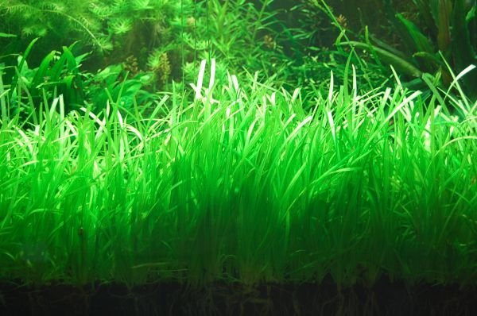
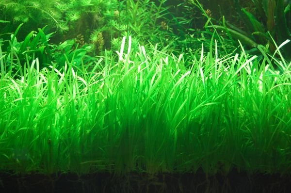
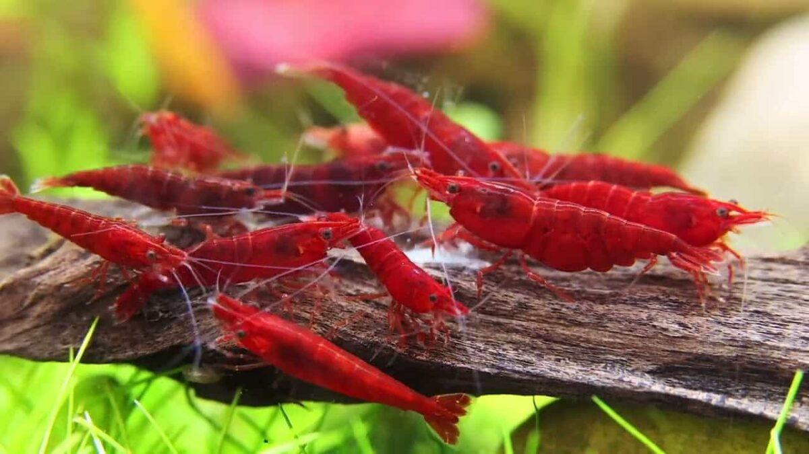

Ana Sayfa
Genel Bilgiler
Ucuz Bütçe
Pahalı Bütçe
Orta seviye akvaryumumuzda bitli bol bitki kullanıcam,bu yüzden içine koyacağımız balıklar sakin fazla yüzmeyen balıklar olucaklar.
Orta seviye akvaryum için en uygun bu akvaryumu bulabildim Akvaryum
 Kum tercihimiz bol ve önemli olmalı çünkü bitkilerin kopmasını istemiyoruz
Kum için tercihim
Kum tercihimiz bol ve önemli olmalı çünkü bitkilerin kopmasını istemiyoruz
Kum için tercihim Kum
 Kumdan 2 paket alıcaz toplam 12 kilo bize yeterde artar
Bitki olarak giriş seviye bitkiler ve zamanla büyüyüp görsel olarak güzel gözükecek bitkiler alıcaz
Kumdan 2 paket alıcaz toplam 12 kilo bize yeterde artar
Bitki olarak giriş seviye bitkiler ve zamanla büyüyüp görsel olarak güzel gözükecek bitkiler alıcaz
Su Oku Bitkisi
 
Büyüyünce tabanda çok güzel bi görüntü oluşturur ve yavru balıkların saklanmasınca can payı oynar
Büyütmesi aşırı basit bir bitkidir her ortama ayak uydurur

Büyüyünce tabanda çok güzel bi görüntü oluşturur ve yavru balıkların saklanmasınca can payı oynar
Büyütmesi aşırı basit bir bitkidir her ortama ayak uydurur
Java moss

 Akvaryuma koyacağınız odun gibi süslere yapışarak nefis bir görüntü oluşturur
Her ortama uyum sağlar falan yumuşak olduğu için otçul balıklar tarafından zarar görebilir
Bu iki bitki kombinlendiğinde çok güzel gözükürler aynı aşağıdaki görsel gibi
Akvaryuma koyacağınız odun gibi süslere yapışarak nefis bir görüntü oluşturur
Her ortama uyum sağlar falan yumuşak olduğu için otçul balıklar tarafından zarar görebilir
Bu iki bitki kombinlendiğinde çok güzel gözükürler aynı aşağıdaki görsel gibi
 Akvaryum balıkları için aklımda 2 tür var
Akvaryum balıkları için aklımda 2 tür var

Otocinclus Affinis
Karidesle yaşayacak balık seçmek çok zor bu yüzden çok pasif bi tür seçtim
Asken kedi balığı türü olmaktadır fakat zararsızdır,Kedi balığı familyasından olduğu için geceleri daha aktiftir,alabileceğiniz en iyi yosun yiyicidir
Bu balıktan 5 tane alıcaz

Karides
İzlemesi gerçekten çok zevkli bitki yemesinden tut akvaryumda yüzmeleri çok hoşunuza gidicek
Karidestende 25 30 tane alıcaz
Toplam Bütçe
Akvaryum 12000
Kum 1800
Bitkiler 500
Canlılar için balığın tanesi 250 tl den 1250 tl yapar
Karideslerin ise tanesi 50 tl 1500 tl yapar
Toplam 16650 tl yapar
İsterseniz akvaryuma salyangozda atabilirsiniz (fiyatları çok ucuz fiyata eklemedim)
Başa dönmek için